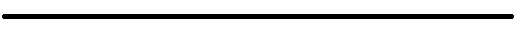

4 октября 1957

Первый запуск спутника в космос
Космическая гонка началась в 1950-х годах между Советским Союзом и Соединёнными Штатами Америки. 4 октября 1957 года СССР вывел на орбиту первый искусственный спутник Земли (ИСЗ) — «Спутник-1».
4 января 1959
Выход спутника на геоцентрическую орбиту
Станция «Луна-1» прошла на расстоянии 60000 километров от поверхности Луны и вышла на гелиоцентрическую орбиту. Она стала первым в мире искусственным спутником Солнца.
14 сентября 1959
Первый спутник достигший поверхности луны
Станция «Луна-2» впервые в мире достигла поверхности Луны в районе Моря Ясности вблизи кратеров Аристилл, Архимед и Автолик, доставив вымпел с гербом СССР.
4 октября 1959
Первое фото невидимой стороны луны
Была запущена автоматическая межпланетная станция «Луна-3», которая впервые в мире сфотографировала невидимую с Земли сторону Луны. Также во время полёта впервые в мире был на практике осуществлён гравитационный манёвр.
19 апреля 1960
Полёт белки и стрелки
Для запуска первых в мире собак-космонавтов в космос был разработан и собранн специальный аппарат под названием "Спутник 5", на котором и произошёл первый выход в космос живых существ в истории человечества
12 апреля 1961
Первый полёт в космос человека
Первый полёт человка в комос был совершён с помощью корабля "Восток-1". Полёт длился ХХ дней, за это время корабль обогнул всю планету и успешно приземлился. За счёт разработанной кострукции Юрий Гагарин и стал первым человеком опкарившим космос
12 апреля 1962

Первый групповой космический полёт
Совершён первый в мире групповой космический полёт на кораблях «Восток-3» и «Восток-4». Максимальное сближение кораблей составило около 6,5 км.
16 апреля 1963
Первый полёт Женщины-космонавта
совершён первый в мире полёт в космос женщины-космонавта (Валентина Терешкова) на космическом корабле «Восток-6»